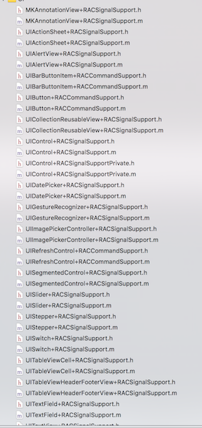
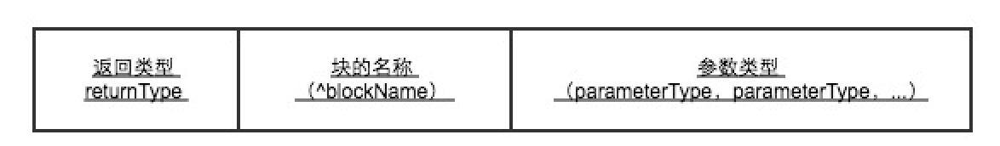

LMAttributedString是一个函数式编辑富文本的库
写这个库的原因是在学习ReactiveCocoa时候，理解了那么一点点的关于函数式编程的思想而写的，所以写的比较简陋望见谅。
专题-OC
阅读全文


ReactiveCocoa基本了解
ReactiveCocoa（简称为RAC）,是由Github开源的一个应用于iOS和OS开发的新框架,ReactiveCocoa编程思想:函数式编程（Functional Programming）,响应式编程（Reactive Programming）,ReactiveCocoa被描述为函数响应式编程（FRP）框架。
专题-OC
阅读全文

块的理解和使用
块是Objective-C语言提供的一强大特性.块与函数和方法类似,但除了是可执行代码外,块还含有与堆内存和栈内存绑定变量.块就是一个实现的闭包,一个允许方法其常规范围之外的变量的函数.
专题-OC
阅读全文


使用运行时系统API实现AOP编程
AOP为Aspect Oriented Programming的缩写，意为：面向切面编程，通过预编译方式和运行期动态代理实现程序功能的统一维护的一种技术。
AOP将功能与程序中的其他组成部分分割开....
专题-OC
阅读全文
Foundation框架中常用类
Foundation框架定义了Objective-C程序通用API的基础层.其中包括根对象类,基础数据类型类,原始数据类型的封装类,用于存储和操作其他对象的集合类,以及用于处理系统信息,实现网络和其他功能的类..
专题-OC
阅读全文